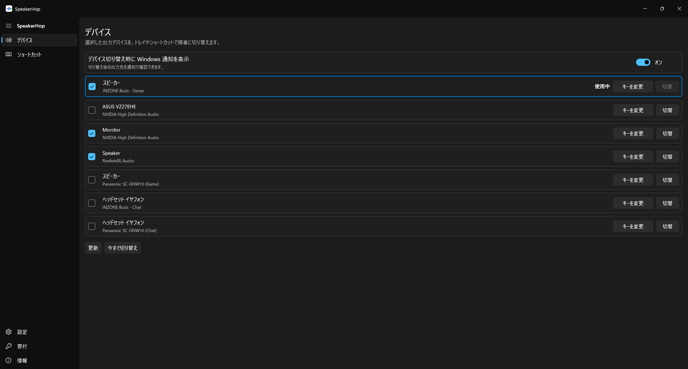

SpeakerHop
Windows の音声出力をトレイアイコンやショートカットから切り替える常駐アプリです。スピーカー、ヘッドホン、モニターなどの出力デバイスを切り替え対象に設定できます。
バージョン 1.1.0 · Windows 10 / 11 · x64


使い方
デバイスを選ぶ
「デバイス」で、切り替えに含めたい音声出力を選びます。
クリックで切り替える
トレイアイコンを左クリックするたび、選んだ出力へ順番に切り替わります。
できること
出力先をすばやく変更
トレイとグローバルショートカットから操作。特定のデバイスへ直接切り替える設定もできます。
音量とミュートの操作
音量の上下、出力のミュート、マイクのミュートにショートカットを設定できます。
ショートカットの設定
ひとつの操作に複数のキー割り当てが可能。使わない操作は無効にできます。
8言語のインターフェース
日本語、英語、中国語（簡体字・繁体字）、韓国語、ドイツ語、フランス語、スペイン語に対応。
画面


始め方
- Microsoft Store からインストールします。
- SpeakerHop を開き、「デバイス」で切り替える出力にチェックを入れます。
- トレイアイコンを左クリックして切り替えを試します。
- 必要に応じて「ショートカット」でキー割り当てを変更し、保存します。
GitHub の開発用 ZIP を使う場合は、Developer Mode と Windows App Runtime 1.7（x64）が必要です。インストール手順を確認してください。未署名 MSIX は、そのままインストールできる製品用インストーラーではありません。
初期ショートカット
| 次の出力へ切り替え | Ctrl + Alt + Shift + F9 |
|---|---|
| 音量を下げる | Ctrl + Alt + Shift + F10 |
| 音量を上げる | Ctrl + Alt + Shift + F11 |
新規設定の初期値です。更新時は保存済みの設定を維持します。特定デバイスへの切り替えやミュートは初期状態では未割り当てです。
よくある質問
ウィンドウを閉じても使えますか？
トレイから操作できます。設定ウィンドウはトレイアイコンの右クリックメニューから開けます。
キーを登録できないときは？
別のアプリが同じキーを使用している可能性があります。「ショートカット」で別の組み合わせに変更してください。
録音やログの自動送信はありますか？
音声の録音やログの自動アップロードは行いません。寄付タブでは外部のボタン画像を取得し、外部リンクはブラウザーで開きます。
マイクミュートは何を対象にしますか？
Windows の既定の入力デバイス（Multimedia ロール）を対象にします。出力ミュートとは別の操作です。